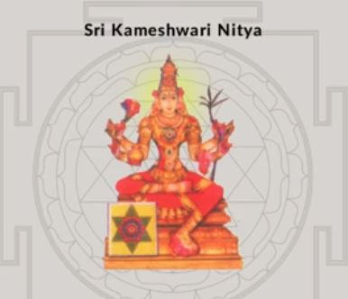
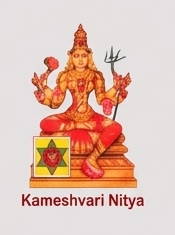
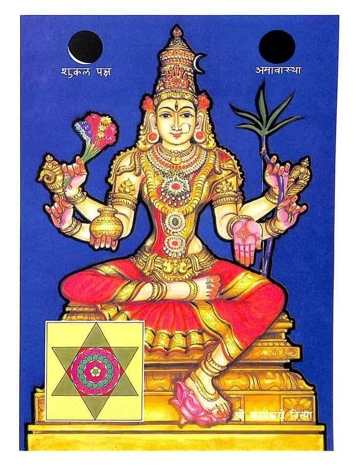

Two candidates in nityas-opt/ · tested at actual chip sizes (18–150 CSS px). Original full portrait is 719×960 for reference.
kameshwari-crop.JPG — 386×332 JPG est. crop
kameswari-crop-2.png — 175×235 PNG est. crop
Note: text at top becomes 2–3 px illegible noise at 22–32; background yantra muddies at 22.
Tighter ⇒ figure fills chip better at 22–48, but 96–150 is soft (source only 175 px wide). Text bottom also noisy at 22.
18px circle crops to face — both become abstract at this size, B slightly better because figure larger. Recommendation: avoid image at 18px pulse; use bīja · अं or a dot instead.

| Criterion | A wide 386×332 JPG | B tight 175×235 PNG |
|---|---|---|
| Resolution (retina headroom) | 386 px — marginal for 256w retina, ok for 128w | 175 px — insufficient, will blur at 96–150 (needs 512 source) |
| Chip 22–32 legibility | Poor — text + faint yantra become noise; figure small in frame | Better — figure fills frame, but text still noise |
| 48–64 chip | OK if text removed; yantra background competes | Cleaner — tighter crop reads better |
| 96–150 hero | Usable but soft at 150 (upscale) | Soft/pixelated at 96–150 |
| Text overlay | “Sri Kameshwari Nitya” top must be removed for calendar use | “Kameshwari Nitya” bottom must be removed |
| File quality | JPEG artifacts, 18 KB | PNG 54 KB, slightly cleaner but low-res |
→ Neither is production-ready at chip size without edits. Best path: re-crop from the original 719×960 PNG at higher resolution, no text, square 1:1 face-centered (keep yantra icon if you want, but drop the caption text). B’s tighter framing is the right idea for chips; A’s context (halo + icon) is better for hero.
Suggested clean crop spec: 512×512 square @ ~face (crown fully in, feet may crop), centered on face, solid #F4EFE6 or transparent background (not the faint yantra plate), no text. Then we ship: 128w (~7 KB) for chips + 256w (~25 KB) for hero/detail (srcset). Total ~144–428 KB.
If you like B’s tightness, redo B from the original at 512px and remove bottom text — it will be sharp at 96–150. If you prefer A’s yantra plate, keep it but remove top text and increase to at least 512 wide.
View live: nitya.html (full 16) and this file nitya-crop-eval.html. Both on http://127.0.0.1:8124/nitya-crop-eval.html.